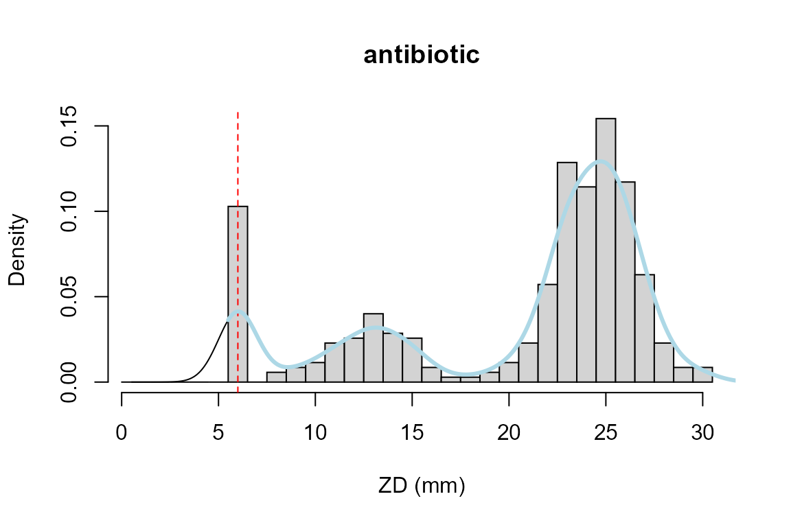
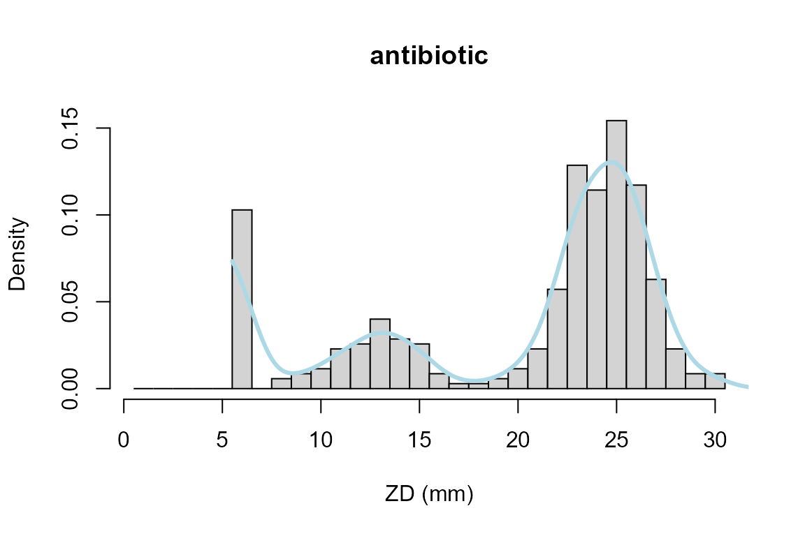

antibioticR
Introduction.RmdPlease note: This document reflects work in progress and will be updated from time to time. The most recent copy can be downloaded from https://github.com/tpetzoldt/
During the 20th century, antimicrobial agents like antibiotics (that are active against bacteria), antivirals, antifungals and other substances that are active against parasites (e.g. against malaria) have made modern medicine possible (Antimicrobial Resistance 2016). However, the dramatic increase of resistant and multiresistant bacterial pathogens is now been widely recognized as a global challenge for human health (Roca et al. 2015; Antimicrobial Resistance 2016; ECDC 2017).
As there is currently still lack in understanding how environmental factors influence evolution and transmission of antibiotic resistances, “global efforts are required to characterize and quantify antibiotic resistance in the environment” (Berendonk et al. 2015).
This package aims to improve accesibility to statistical methods for analysing populations of resistant and non-resistant bacteria from an environmental, i.e. non-clinical perspective. The methods are intended to describe sensitivity, tolerance and resistance on a sub-acute level in order to compare populations of different origin on gradual scales.
We assume that environmental populations are composed of different geno- and phenotypes, so that quantitative data from standard methods like disc diffusion zone diameters (ZD) or minimum inhibitory concentration (MIC) values will yield multi-modal univariate mixture distributions when tested against single antibiotics.
The package relies on existing packages, especially packages evmix (Hu and Scarrott 2018) for boundary corrected density estimation and package bbmle (Bolker and R Development Core Team 2017) for maximum likelihood estimation. The package will be amended by visualization tools and interactive web-applications using R’s base graphics and statistics packages [RCore2015], packages ggplot2 (Wickham 2016) and shiny (Chang et al. 2018).
Please note: The package and this document are in an early stage of development (alpha). It comes without warranty and is not intended for clinical applications. Its functions and classes are likely to change and may contain mistakes and errors. Source code of the development version is available from https://github.com/tpetzoldt/antibioticR. Comments are welcome.
The package supports currently three methods:
The data set for demonstrating main features of the package was provided by … It contains …
** the alpha version contains articficial test data**
After loading the package:
library("antibioticR")
we load the data and inspect its structure with str:
…
The wild type population is defined as “an isolate that it is devoid of phenotypically detectable acquired resistance mechanisms to a specified antimicrobial agent.” (Kahlmeter, Turnidge, and Brown 2018)
Lets assume a multi-modal distribution of zone diameters (zd in mm), here an example for Escherichia coli exposed to the antibiotic Piperacillin in an inhibtion test (data from http://www.eucast.org). The data are binned with a class frequency of 1mm and censored by a minimum value of 6mm, the diameter of the antibiotic test disc.
As not all density functions support weighted data (R’s density-function does, but the functions from evmix do not), we expand the binned vector to raw data with a helper function unbin:
freq <- c(36, 0, 2, 3, 4, 8, 9, 14, 10, 9, 3, 1, 1, 2, 4, 8, 20, 45, 40, 54 , 41, 22, 8, 3, 3, 0, 0) classes <- 5 + (1:length(freq)) zd <- unbin(classes, freq)
We shift the distribution by 0.5 to the class centers and use standard density smoothing with the default Gaussian kernel. It shows already good results for the rightmost (wild-type) and the intermediate component (sub-population). However, it is obviously not valid for the censored left component:
hist(zd, breaks =seq(0, max(zd))+0.5, xlab="ZD (mm)", main="antibiotic", probability=TRUE) lines(density(zd, bw=1, from=0, to=max(zd))) abline(v=6, col="red", lty="dashed") lines(abr_density(zd, cutoff = 5.5, method = c("density"), control = abr_density.control()), col="lightblue", lwd=3)
Function abr_density with option “density” is just a wrapper around this. It clips values below the interval, but does not correct its shape.
This can be improved with boundary corrected density estimation from package evmix (Hu and Scarrott 2018):
hist(zd, breaks =seq(0, max(zd))+0.5, xlab="ZD (mm)", main="antibiotic", probability=TRUE) lines(abr_density(zd, cutoff = 5.5, method = c("evmix"), control = abr_density.control()), col="lightblue", lwd=3)

Here, bckden from package evmix is called with a lower boundary cutoff=5.5mm, so that the antibiotic disc size of 6 mm becomes the class midpoint. The arguments of dbckden can be adapted with the control parameter.
ECOFFinder is an algorithm developed by Turnidge, Kahlmeter, and Kronvall (2006). Wild-type cut-off values for MIC data are estimated from quantiles of a normal distribution of \(\log_2\) transformed MIC values. Mean and standard deviation of this distribution are estimated by non-linear regression between a normal probability distribution (that is scaled in y-direction by a parameter \(K\)) and cumulative frequencies of observation data.
In order to separate the wild-type normal distribution from other components, e.g. the resistant sub-population, the regression is repeated using successive subsets of data, until an optimal fit between the subset and the normal probability function is found.
Firstly we load and inspect the test data set, included in the package:
## conc freq
## 6 0.03125 1
## 7 0.06250 5
## 8 0.12500 14
## 9 0.25000 80
## 10 0.50000 154
## 11 1.00000 57
## 12 2.00000 27
## 13 4.00000 5
## 14 8.00000 0
## 15 16.00000 4
## 16 32.00000 2
Then we omit not measured (NA) values, transform the data and plot the cumulative distribution:
## discard NA values measured <- na.omit(micdata) ## cumulative plot plot(cumsum(freq) ~ log2(conc), data=measured, type="l")
Now we copy the transformed data to new variables xand y to save typing. Function ecoffinder_startpar then helps us to guess start parameters for the subsequent nonlinear regression. The function works internally by applying a kernel density estimation. Details can be found on the help page of ecoffinder_startpar and of R’s function density:
x <- log2(measured$conc) y <- measured$freq ## heuristic start values pstart <- ecoffinder_startpar(x, y) pstart
## mean sd K
## -1.002944 1.150871 338.000000If the start parameters look reasonable, they can be directly fed into ecoffinder_nls`. This works well in many cases, but sometimes, it may be necessary to enter user-defined start parameters instead.
## nonlinear regression p <- ecoffinder_nls(x, y, pstart, plot=FALSE)
## Search concentration: 0 1 2 3 4 5summary(p)
##
## Formula: cumCount ~ fnorm(conc, mean, sd, K)
##
## Parameters:
## Estimate Std. Error t value Pr(>|t|)
## mean -1.54565 0.04257 -36.31 2.91e-08 ***
## sd 0.91042 0.05768 15.78 4.10e-06 ***
## K 339.02677 4.00460 84.66 1.83e-10 ***
## ---
## Signif. codes: 0 '***' 0.001 '**' 0.01 '*' 0.05 '.' 0.1 ' ' 1
##
## Residual standard error: 7.179 on 6 degrees of freedom
##
## Number of iterations to convergence: 8
## Achieved convergence tolerance: 8.809e-06
##
## ---
## ECOFF quantiles:
## Q_0.95 Q_0.975 Q_0.99 Q_0.999
## 1 2 2 4A visualisation is possible during the fitting process (plot=TRUE) or with a specialized plot function:
plot(p)
plot(p, cumulative=FALSE, fits="best")
Additional functions like coef or abr_quantile can be used to access additional results
coef(p)
## mean sd K
## -1.5456547 0.9104227 339.0267704# abr_quantile(p, q=c(0.01, 0.1, 0.5, 0.9, 0.99)) # not yet implemented, needs log2_flag
breaks <- 0:28 counts <- c(36, 0, 2, 3, 4, 8, 9, 14, 10, 9, 3, 1, 1, 2, 4, 8, 20, 45, 40, 54, 41, 22, 8, 3, 3, 0, 0,0) observations <- unbin(breaks[-1], counts) # upper class boundaries (comp <- mx_guess_components(observations, bw=2/3, mincut=0.9))
## mean sd L
## 1 1.040054 0.7032986 0.1055751
## 2 7.805322 2.0509038 0.1775396
## 3 19.505968 2.1153693 0.7168853obj <- mxObj(comp, left="e") obj2 <- mx_metafit(breaks, counts, obj)
The results can then be plotted with function mx_plot. The optional disc argument adds the diameter of the antibiotic disc.
mx_plot(obj2, disc=5.5, main="", xlab="ZD (mm)")
Numerical results can be obtained with:
summary(obj2)
## Maximum likelihood estimation
##
## Call:
## mle2(minuslogl = llunimix, start = parms)
##
## Coefficients:
## Estimate Std. Error z value Pr(z)
## L1 0.102637 0.016246 6.3179 2.652e-10 ***
## L2 0.183466 0.020879 8.7872 < 2.2e-16 ***
## rate1 7.891433 8.638539 0.9135 0.361
## mean2 7.304443 0.283240 25.7889 < 2.2e-16 ***
## sd2 2.140047 0.226415 9.4519 < 2.2e-16 ***
## mean3 19.029089 0.126390 150.5588 < 2.2e-16 ***
## sd3 1.948262 0.093759 20.7795 < 2.2e-16 ***
## ---
## Signif. codes: 0 '***' 0.001 '**' 0.01 '*' 0.05 '.' 0.1 ' ' 1
##
## -2 log L: 1873.47or with:
results(obj2)
## components L1 rate1 L2 mean2 sd2 L3
## [1,] 3 0.1026367 7.891433 0.1834663 7.304443 2.140047 0.713897
## mean3 sd3 q01 q05 L_q01 r2_var r2_cor
## [1,] 19.02909 1.948262 14.49675 15.82448 0.7085714 0.9997274 0.9997277
## EF
## [1,] 0.9997274Many thanks to the EUCAST consortium and to the Hydrobiology work group of TU Dresden for test data sets, to John Turnidge, Stefanie Hess, Damiano Cacace. David Kneis and Thomas Berendonk for stimulation and discussion and to the R Core Team (R Core Team 2015) for developing and maintaining R. This documentation was written using knitr (Xie 2014) and rmarkdown (Allaire et al. 2015).
Allaire, JJ, Joe Cheng, Yihui Xie, Jonathan McPherson, Winston Chang, Jeff Allen, Hadley Wickham, and Rob Hyndman. 2015. rmarkdown: Dynamic Documents for R. https://CRAN.R-project.org/package=rmarkdown.
Antimicrobial Resistance, Review on. 2016. Tackling Drug-Resistant Infections Globally: Final Report and Recommendations. Review on Antimicrobial Resistance.
Berendonk, Thomas U., Célia M. Manaia, Christophe Merlin, Despo Fatta-Kassinos, Eddie Cytryn, Fiona Walsh, Helmut Bürgmann, et al. 2015. “Tackling Antibiotic Resistance: The Environmental Framework.” Nature Reviews Microbiology 13: 310. https://doi.org/10.1038/nrmicro3439.
Bolker, Ben, and R Development Core Team. 2017. “Bbmle: Tools for General Maximum Likelihood Estimation. R Package Version 1.0.20.” https://CRAN.R-project.org/package=bbmle.
Chang, Winston, Joe Cheng, JJ Allaire, Yihui Xie, and Jonathan McPherson. 2018. Shiny: Web Application Framework for R. https://CRAN.R-project.org/package=shiny.
ECDC. 2017. Surveillance of Antimicrobial Resistance in Europe 2016. Annual Report of the European Antimicrobial Resistance Surveillance Network (Ears-Net). Stockholm: European Centre for Disease Prevention and Control. https://ecdc.europa.eu/.
Hu, Yang, and Carl Scarrott. 2018. “evmix: An R Package for Extreme Value Mixture Modeling, Threshold Estimation and Boundary Corrected Kernel Density Estimation.” Journal of Statistical Software 84 (5): 1–27. https://doi.org/10.18637/jss.v084.i05.
Kahlmeter, Gunnar, John Turnidge, and Derek Brown. 2018. “EUCAST General Consultation on "Considerations in the Numerical Estimation of Epidemiological Cutoff (Ecoff) Values".” Draft paper, May 31, 2018. http://www.eucast.org/fileadmin/src/media/PDFs/EUCAST_files/MIC_distributions/ECOFF_procedure_2018_General_Consultation_20180531.pdf.
R Core Team. 2015. R: A Language and Environment for Statistical Computing. Vienna, Austria: R Foundation for Statistical Computing. https://www.R-project.org/.
Roca, Ignasi, Murat Akova, F Baquero, J Carlet, M Cavaleri, S Coenen, J Cohen, et al. 2015. “The Global Threat of Antimicrobial Resistance: Science for Intervention.” New Microbes and New Infections 6: 22–29. https://doi.org/10.1016/j.nmni.2015.02.007.
Turnidge, J., G. Kahlmeter, and G. Kronvall. 2006. “Statistical Characterisation of Bacterial Wild-Type MIC Value Distributions and the Determination of Epidemiological Cut-Off Values.” Clinical Microbiology and Infection 12 (5): 418–25. https://doi.org/10.1111/j.1469-0691.2006.01377.x.
Wickham, Hadley. 2016. Ggplot2: Elegant Graphics for Data Analysis. Springer-Verlag New York. http://ggplot2.org.
Xie, Yihui. 2014. “knitr: A Comprehensive Tool for Reproducible Research in R.” In Implementing Reproducible Computational Research, edited by Victoria Stodden, Friedrich Leisch, and Roger D. Peng. Chapman; Hall/CRC. https://www.crcpress.com/product/isbn/9781466561595.